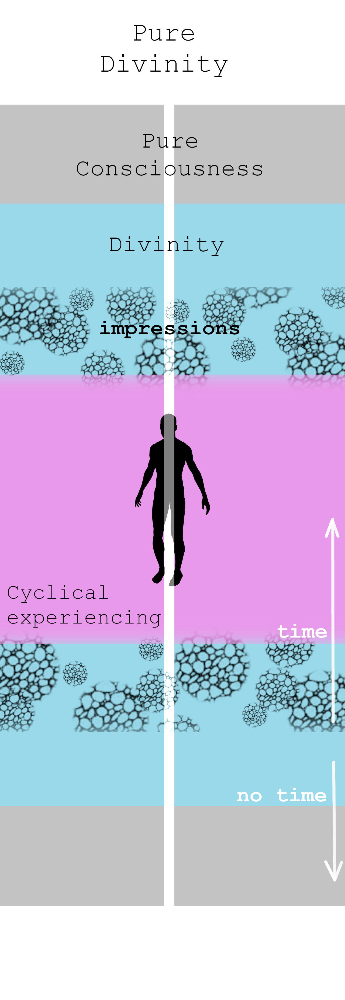

Hi! My name is Tomek.

Below I describe a simple model of the transition from the experience of separation to the awareness of Divine Love, based on the observation of changes that have and continue to occur in my perspective.
As humans, we are in cyclical experiencing, within a field of Divinity in which, alongside with the perception of individuality, we remember our Unity in God's Love. Divinity is an extension of Pure Consciousness, the self-aware unmanifested field of the single Divine Self. Pure Consciousness is an extension of Pure Divinity, the state of infinite Love, Power and Glory of God.
The field of impressions on the one hand contributes to the crystallization of our human individuality, and at the same time obscures the awareness of Divine Unity. Experiencing is based on downloading and generating impressions (memory of possible experiences) through the energy field, which becomes concrete as a physical body:
There are variable time scale cycles within experiencing, but the most essential ones are those related to the release of the deeply rooted fear in the part of Consciousness that amounts to our sense of individuality. In a way all that cyclical experiencing is doing, essentially, is trying to produce situations in which this deeply rooted stress can be released. Timelines are being switched at the release points of the major chunks of this stress, either going into qualitatively new and lighter scenarios, or recycling time around aspects of stress that failed to be dislodged. Generally speaking, there are two qualitative limits of the range of cyclical experiencing:
In the ego modality, experiencing seems to have the function of ensuring the survival of the self-image, and the self-image itself is the cause of this function. Such experiencing is characterized by unconscious participation in cycles of experiences accompanied by fear, in various degrees of its intensity, from extremely subtle to extremely overwhelming, invariably containing reflexes of comparison, judgement, sense of being right, sense of competition, shame, blame, guilt, attachment, irritation, anger, hatred, etc.
In the modality of heaven, experiencing has the function of closing the loop of love, and the self-image itself is the effect of this function. In this modality, cycles of experience are conscious and negative feelings are not present. The loop of love is closed between the reality of causeless and nonlinear Unity outside of time and space, and what is perceived. This closure is possible thanks to the emptying of fear, which unblocks the subtle and physical nervous system of the human body.
Between these two modalities there is a chain of forgiveness (made of cycles of time and interlocked stress), the function of which is to free the self from identity with fear.
The expansion of consciousness beyond the sphere of cyclical experiencing is possible through the Grace of God - Intelligence of Beings abiding in heavenly Unity, who support the awakening of all individual beings in Consciousness. Beings of God's Grace (a.k.a Love's Grace or Holy Spirit) extract our individual perspective from the field of impressions, so that their influence on us is no longer unconscious and dominant. This does not change our crystallized personality but only makes it transparent and empties it of the ability to project and attack. What happens in the movement of the so-called enlightenment, after its initial impersonal phase, is the embrace of our personality and the body with the energy of Divine Love, in the Awareness of Oneness of oneself and that which lives through other bodies and personalities. One way of talking about this is through the texts of the Christ Mind Library. In particular, A Course in Miracles focuses on a mechanism for forgiving the sense of separation based on close cooperation with the Holy Spirit. In turn, the metaphysics of the origin of fear is approximated in the descriptions of The Way of Mastery and Choose Only Love, which is of importance from the point of view of motivating forgiveness (purification) of fear in oneself, also in the post-personal stages of evolution.
~*~Below are some examples of discreet and time-spanning transformations of perspective that are related to the described above model.
In 2009, an episode of meditation opened my perspective into timeless bliss and a spontaneous flow of Love that lasted day and night for over a week. It was quite unexpected - a friend drew my attention to one of the sages of the East, which in turn redirected it to several books about mystical experience and one book about meditation, based on which I had started a spontaneous practice a few weeks earlier. I lived in Glasgow at the time and after completing my PhD, I worked at one of the universities there. On the day of this opening, I mistakenly went to a church an hour too early and decided to spend time meditating in a nearby park. I remember that I was determined to dive deep within myself - and that those few moments that I spent in inner darkness and gentle bliss, to my surprise, turned out to be an entire hour. Walking back to the church, I noticed that my perspective was filled with a previously unknown depth of sensitivity to the spiritual dimension of everything I perceived. That same night I regained awareness during sleep: I was aware that my body had been left and was still sleeping, but I myself was perceiving through a more abstract disembodied instrument. My initial perspective was of complete darkness accompanied by a feeling of peace. After some time, it moved into an ocean of white light, accompanied by waves of bliss so great that each subsequent one seemed impossible. In both of these states there was no distinct structure - pure formlessness reigned. There was also no dimensionality of space - as in "three-dimensional space". My perspective was a point that reflected the quality of the whole state in which I was located. In the light, the power of bliss was so great that my physical body was unable to reflect it - after a sudden awakening, I found it completely inflamed - at the edge of its endurance. The state of bliss and Love that filled my heart lasted continuously for several days, during which the flow of time seemed to be plastic and at the same time everything I perceived was decorated with a subtle aura of beauty that I had never noticed before. While going to work and meeting friends, I was constantly aware of a deep intimacy with everything and everyone - an intimacy in Love and Oneness that is known to all of us but that we do not talk about. The intensity of this change eventually subsided, leaving behind a gradually budding reorientation of the rest of my life.
The subsequently described experiences occurred after my perspective had shifted to a state of predominance of impersonal consciousness, which had occurred gradually in earlier years.

[*1] My older brother lived with our parents while I studied and worked in the UK. At the end of my studies in Glasgow, in 2008, he came to visit me, which linked our fates in the following years.
It was maybe 2020, when I lived with my brother in one of the towns near Warsaw (above photo together [*1] from that period). I had a habit of walking along the embankment along the river that ran through the park adjacent to the estate where we lived. During one of these walks, my perspective was completely transformed. Suddenly everything became incredibly beautiful, as if covered with a layer of transparent "slippery" light, emanating from every point simultaneously. With this, my perspective was filled with a Royal Status of Divine Love and Glory, as if God "Himself" was looking at "Herself" through me. Every detail I paid attention to revealed to me the fractal depth of its infinite nature - in a nonverbal way - through direct insight it became known to me in its multidimensional character, which I could explore endlessly just by looking. Everything I perceived was part of my Own Kingdom and, as a living Being, it emanated the Glory of Love, which resounded like an endless chord. This was accompanied by an incredible sense of wellbeing, comfort and complete naturalness. It was clear to me that everything was completely immaterial and timeless. This change of perspective - which is an example of God Consciousness (Pure Divinity in the model above) - lasted a few minutes and gave me insight into how richly the reality of God's Love can be reflected in perception (let's imagine that we can all live and function in such a status; below is a photo of the mentioned embankment).

Awakening is usually characterized by an initial departure from personal consciousness and the noticing of impersonal presence/witness, from which it is possible to observe aspects of our personal functioning. In the above model, I use the generally accepted term Pure Consciousness to encompass that which includes the sphere of impersonal observation of one's own personal nature. Nevertheless, the capacity for pure observation itself is qualitatively different from the much richer realm of Divinity that can open up through us, as the examples below show. The variety of talents and phenomena that may characterize the Divine nonlinearity of our perspective is so rich that it seems more accurate to refer to integration with the sphere of Divinity as a gradual reorientation of our desires towards a uniform direction of service to Universal Love. This can take many forms and primarily refers to spontaneous motivation expressing through us. The following three examples refer to opening into the sphere of Divinity and belong to a wide spectrum of phenomena that may characterize such an opening.
In the summer of 2021, I was at my parents' house, programming on the computer as part of the job I was doing. Suddenly, the luminous figure of a spirit guide appeared next to me in energy, and I regained awareness of my infinite body. I looked around with joy, seeing in every direction the infinite field of consciousness, its endless depth, as an extension of my own body. This was accompanied by incredible joy and subtle bliss, and at the same time a certainty of freedom that goes so far beyond the reality of human experience that it is impossible to describe. I remember feeling like I could just walk out of the relationship with my parents, that I could walk out of all the human relationships I was in without having to address them any further. After a few moments spent with my parents, laughingly surprised that they didn't see what I saw, I went for a walk to enjoy the awareness of my infinite body on my own. The awareness of the endless depth of perception stayed with me for several days. I secretly savored it - what I was looking at - whether it was the sky or the wall of the room - had this incredible quality of being me, which ends nowhere. After some time, the clarity of this quality disappeared, for several weeks leaving behind a constancy of joy and subtle bliss (below a photo from one of the walks in the summer of '21).
In 2023 my perception opened to "hearing vibrations" and at the same time - many times - to a clear awareness of heavenly Love. On the one hand, the vibrations in the field of energy began to "speak to me": the various forms of vibrations that I felt in my perspective were now easily translated into words and meanings (including hearing the guidance of Divine Grace). On the other hand, I was often aware of Divine Love, as if It was spread out on the screen of my perception, or even sometimes as if I was withdrawn beyond this screen, like there was a small gap between me and it, within which, as Love and Power, I remained Myself in My Own Nature. This happened simultaneously with the normal course of everyday life, during shared meals at my parents' house, along with a high intensity of energy in my subtle body. I was also often aware of the angelic presence, sometimes joyful jokes and encouragement to talk about God's Love. Especially when I was in the joy of nondual experience, the angelic presence surrounded me on all sides, shifting my perspective into the depths of Love, beyond time and space (below is a photo with the family [*2] from the early 1990s).

[*2] My family had many extremely strong patterns of separation that contributed to its turbulent dynamics. Part of this was my role as mediator in the relationship between my parents and my close relationship with Mom, which symbolically culminated in my assisting in her lifelong immunotherapy.
In mid '23 I stopped working and started living with my parents in southeastern Poland. In the autumn I went to the USA for a few weeks to take part in a kind of culmination of a 4-year dynamic of transcendence, transmutation and devotion to the Truth of Pure Divinity, in which I was with a group of friends gathered around Andrew Hewson (Andrew had a phenomenal gift of transmission, which had a catalytic effect on the experiences and changes described above). After my return, there was a period of quite tedious integration in the energy of Divinity (experienced as currents of "high voltage" energy penetrating my nervous system), which for a number of months transferred my perspective into a timeless field of pure potentiality, joy and Love, in contrast to the field of inertia of the energy of separation that characterized family life. Initially, the cycles of days began with states of pure transcendence, in which I saw myself and everything around me as a field of consciousness, in which every moment and every experience was like a completely new, freshly unwrapped present. During the interactions with my parents during the day, this state underwent a phase transition into the tangibility of the perception of time and the effort of spending it. Part of the ego in me had a great aversion to this constant contrast, even though my perspective remained without the perception of time, and the memory of the previous day's experiences was erased daily. Every day I saw "with my own eyes" how great the contrast was between the energy of pure Love flowing from the core of Divinity, and the vibration of separation represented by the remnants of the ego in me and by the streams of consciousness of my parents. Due to our configuration - Mom's illness, my lack of work and subsequent unsuccessful attempts to return to work - I stayed with my parents. After a few months, one morning my perspective climbed for the last time to the heights of transcendence, from which in the field of pure potentiality and unconditional joy of heaven I could look at the whole configuration of the sense of separation in our home as if from a bird's eye view, in almost complete freedom from identification with my incarnation in time and space. At some point from this distance in vibration I looked at our combined density of energy and felt a spiral movement that pulled my perspective into its interior. From that time on, this demarcation between states of pure transcendence and the density of ancestral vibration was replaced by an intimate fusion with the energy field of my parents, simultaneously with the observation of the flows of pure life force, in whose delicate transcendence my perspective remained. The state of transcendence became more intimate and less externalized in the objects of perception, but at the same time the objects of perception retained their quality of being inside me. For several months it was also still a period of intensive transmutation of the remnants of ego tendencies in the pool of impressions of my individuality. Much of this was of an archetypal nature, as the voice of Divine Grace informed me. During this period, the Intelligence of Divinity was still with force penetrating my nervous system with streams of pure Love that transformed my perception. Sometimes, when I watched YouTube or Netflix, the streams of Divine energy flowed into the energy centers of the head, showing me a heavenly interpretation of the joy of creation through expression in Divine Love. On one occasion, I was immersed in a constant jacuzzi of Love that lasted nonstop for a dozen or so hours - as if many Divine Beings had simultaneously carried out a landing on my nervous system:) Another time, when I tried to grieve over the monotony of living with my parents, the Divine energy stream completely overwrote my perspective, shifting it to a field of laughter and complete innocence of perceiving our conjoined helplessness in time and space. Throughout this period, I remained in a living interaction with the Intelligence of Divinity as a companion and complement to my sense of individuality. In July '24 the last "big" transmutation took place, after which my perspective was withdrawn beyond the curtain of time and space, during which for a moment, together with Divine Grace, I watched the switching of timelines, in the closing of the cycle of time associated with the forgiveness of the sense of separation in me and simultaneously in my parents. After this experience all contrasts in the context of family life ceased to bind the ego and became purely energetic densities of the flow of vital force. I also began to feel that the support of the Divine Intelligence - in the strength in which I had felt it before - was gradually fading away and withdrawing from my nervous system. In August, my nervous system touched the lowest frequencies of demonic vibrations [*3] within my family's sense of separation - centered around a basic oscillation of "hopelessness" - which is never an actual state, but is the conclusion of the ego thought system that is unable to produce natural insight into the spiritual nature of the origin of the perception of materiality. Around this time, after more than a year of living in close coupling with my parents, in a state of weakness and fever I began to go on short solo trips. During one of these I noticed that these low vibrations had become part of my field, regardless of the proximity of my family home, with which I had associated them. I realized that I had an authentic choice and I did not have to choose them as something that generated my experience. A short prayer - declaration of responsibility for my experience - freed me from their influence. At the end of September '24, after a month of fever and weakness, the perception of the energy of Love that fuels my perspective changed from detailed streams penetrating specific channels of the nervous system to a broad and diffuse stream of high vibration. I noticed that my field became even more integrated with my parents' energy streams. I was no longer able to see their energy as something separate from myself (below a photo with parents from September '24).

[*3] In the dominance of the sense of separation it is impossible to notice that some aspects of our daily
functioning are symbiotically fueled by energies that are in the service of maintaining the perception of
separation from Divine Love. Such energies contain a signature of pride in the perception of being separate and
apart from God, in the focus on survival in materiality. They can also generate aversion and resentment towards
the very idea of God's Grace and atonement in Divine Love, redirecting attention to forms of compensation
through experiencing within the ego’s thought system. Some of the entities representing this type of energy aim
to disrupt the spiritual process by increasing the fear contained in the field of impressions. All of these
things become easier to discern as our perspective matures.
At the base of my spine, on the back side, connected to my subtle body, remains a cord of energy through which
the impressions of separation related to ancestral energy have been pouring into my field for years. This must
be is the typical configuration for many close relationships, such as my relationship with my parents. Through
this connection, the field of ancestral impressions and collective energy, are kinesthetically mapped onto my
nervous system, while the light of Divinity continues to subject all of these to dissolution - transmutation
into the neutrality of pure vibration - emptying our combined field of the stores of fear.
One of the greatest difficulties for the personal part of me was the close connection with my parents in the
sphere of energy flow linked with the processes of eating and digestion. For a long time, during our time
together at home, the processes of eating and digestion in my parents were reflected in my nervous system, and
with them flowed in the aforementioned impressions and energies, as well as thought forms appropriate to their
functioning. As a result, it became necessary for me to forgive the attachment to the sensations and subtle
energy processes connected with this very basic aspect of human functioning, as something private and limited
only to my own sense of individual consciousness.